DESIGN REVIEW · 27 OCTOBER 2026 · WRITER / SHEETS / PRESENT
Loom against Pages, Numbers and Keynote
The visual shell is coherent, but daily authoring still has substantial gaps in truthful controls, precision, contextual properties and native macOS integration. Repair those contracts before adding more interface surface. This review covers Writer, Sheets and Present only, as confirmed by the owner.
This is a comparative audit, not product acceptance or a second repair ledger. The live gate remains in AGENTS.md and workflow.toml. The initial audit did not change UI behavior, baselines or application acceptance states. The later owner-authorized colour and Sheets performance work is recorded in the follow-up below. The owner subsequently authorized creation and integration of three original app icons; that bounded source/asset change is recorded separately. “High” means repair priority in this review, not a claim of severity-1 data loss.
What was actually checked
- Live macOS interaction with fresh debug Writer, Sheets and Present, and installed Pages/Numbers/Keynote 14.5. Host tool output: macOS 27.0.1, build 26A434.
- 36 successful headless default-state captures: 1024×720, 1280×800, 1440×900 and 1920×1200 in light, dark and high contrast. All 36 were visually inspected across the reviewers. These are content renders, not native frame/menu or OS-DPI proof.
- Targeted source traces through UI, controllers and shared desktop code; three source reviewers and three visual reviews. The subsequent icon verification is reported per app below; no blanket suite pass is claimed.
- Live confirmation of Writer’s black-template mismatch, Sheets’ missing font search, Sheets paste/range/chart/save, Present’s swatch Tab omission, and differing macOS menus. Disk inspection verified six cells and the linked chart definition in audit-chart.loomtable.
- Existing unsaved QA documents restored on launch; recovery files were copied before replacement. Writer Quick Start and Sheets Budget were also saved/copied into the audit folder. No restored content was treated as the current clean startup state.
Pages Creator Studio 15.4 was opened only to its welcome dialog. It required acceptance of a software license to continue; that action was not taken. Current material recommendations therefore use Apple’s published guidance and source inspection, not a claimed live 15.4 editor review.
The initial audit did not treat host integration as its own dimension. The following findings explicitly correct that omission. macOS is outside the current v1 Windows/Linux release gate, but remains relevant to this requested comparison.
MAC-01 · High priority · Live + sourceWriter and Present lose their native application menus
Live AX trees expose only the app menu for Writer/Present; their document menus appear inside the window. Sheets exposes native File/Edit/View/Table/Window/Help. Writer/Present install Loom menus before showing the window, but leave Slint 1.17.1’s default menu enabled. The backend installs its app-only default menu on activation. Sheets explicitly disables that default first.
Recommendation: Reuse Sheets’ backend initialization for Writer and Present. Retain the same command IDs, enable/checked state and handlers. Suppress the local menu only after a real native menu is installed and survives window activation.
Reproduction / acceptance check and source evidence
Activate each app, open File/Edit/View in the macOS menu bar, invoke New/Undo/Save, switch apps and return, and repeat with multiple document windows. Confirm menus and shortcut state remain correct.
/Users/palaashatri/Code/personal/rust-loom/loom-sheets/crates/loom-sheets-app/src/main.rs:2389/Users/palaashatri/Code/personal/rust-loom/loom-writer/crates/loom-writer-app/src/main.rs:3494/Users/palaashatri/Code/personal/rust-loom/loom-present/crates/loom-present-app/src/main.rs:1713/Users/palaashatri/Code/personal/rust-loom/loom-core/crates/loom-desktop/src/menu.rs:1017/Users/palaashatri/Code/personal/rust-loom/loom-core/crates/loom-desktop/src/macos_menu.rs:262
Native macOS frame and client chrome are visually disjoint
The later owner screenshot shows native traffic lights and document titles for Sheets and Present. It disproves a blanket assertion that decorations never exist. It also shows a strong visual break between the native titlebar and Loom’s opaque client toolbar. The cropped image cannot establish actual NSWindow/content bounds or a backing-scale mismatch. Current code requests native frames by default; the custom-chrome environment path remains unsupported on macOS.
Recommendation: Retain functional native controls and establish coherent titlebar/client hosting. Measure frame, content, logical and physical bounds before diagnosing DPI or resizing. Review an appropriate native macOS titlebar/material adapter while preserving the Rust/Slint architecture.
Reproduction / acceptance check and source evidence
At equal logical client sizes on native 1×/2×, record OS frame/content bounds, backend inner physical size and scale factor; move between displays, resize and exercise traffic lights/drag/full screen. Compare active/inactive titlebar and client chrome, including standard versus custom-chrome launch paths.
/Users/palaashatri/Code/personal/rust-loom/loom-core/crates/loom-desktop/src/ui_bindings.rs:337/Users/palaashatri/Code/personal/rust-loom/loom-writer/crates/loom-writer-app/ui/app.slint:31/Users/palaashatri/Code/personal/rust-loom/loom-sheets/crates/loom-sheets-app/ui/app.slint:29/Users/palaashatri/Code/personal/rust-loom/loom-present/crates/loom-present-app/ui/app.slint:27
No explicit Liquid Glass or native-material integration
The searched desktop/UI/application sources have no explicit NSGlassEffectView, NSVisualEffectView or vibrancy/material adapter; their shared surfaces are opaque Slint colour fills. The resulting shell does not adopt current macOS material hierarchy. The supplied and live Apple 14.5 references are useful for layout, but cannot establish current Liquid Glass appearance.
Recommendation: Investigate an OS-gated Rust/AppKit material adapter around the existing Slint host and chrome; feasibility with the current renderer must be proven first. Keep Loom’s identity, menus and document engines. Apply materials to controls/navigation, preserve opaque document artwork, and honor Reduce Transparency, Increase Contrast and Reduce Motion. A generic translucent rectangle is not native Liquid Glass.
Reproduction / acceptance check and source evidence
Compare a native macOS window over contrasting backgrounds, in active/inactive states, light/dark, reduced transparency/contrast/motion and older-OS fallback. Verify document pixels and export content remain unchanged.
/Users/palaashatri/Code/personal/rust-loom/loom-core/crates/loom-ui/ui/theme.slint:81/Users/palaashatri/Code/personal/rust-loom/loom-core/crates/loom-ui/ui/theme.slint:187/Users/palaashatri/Code/personal/rust-loom/loom-core/crates/loom-desktop/Cargo.toml:12
Apple’s macOS guidance calls for familiar window management, command access through the menu bar and precise input. Its materials guidance places Liquid Glass in controls/navigation rather than document content. NSGlassEffectView is a native AppKit mechanism worth investigating; compatibility with Loom’s host/renderer has not been demonstrated.
Reference comparisons
Compare hierarchy and behavior, rather than copying Apple assets or imposing the same document model. Apple captures below were taken live in this session; the Loom counterparts are labelled headless renders so their chrome cannot be mistaken for OS framing.
Writer / Pages
Loom Writer · headless content · 1280×800 dark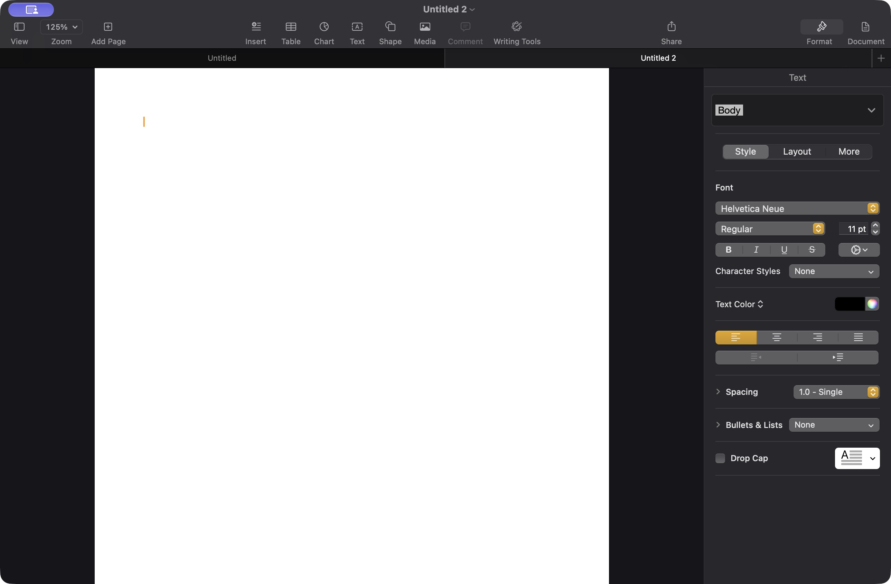
Pages 14.5 · live macOS reference · actual window size differs
Sheets / Numbers
 Loom Sheets · headless content · 1280×800 dark
Loom Sheets · headless content · 1280×800 dark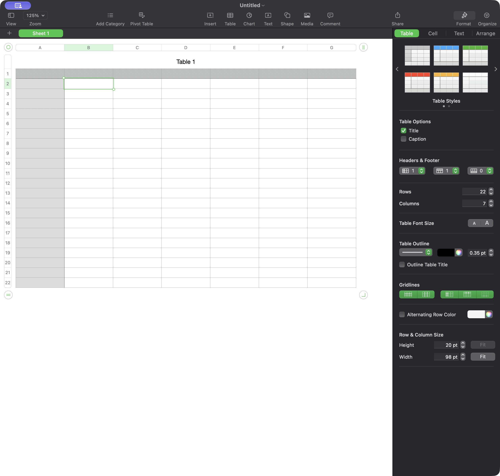
Numbers 14.5 · live macOS reference · actual window size differsPresent / Keynote
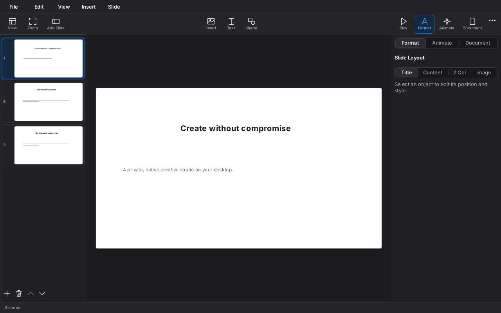
Loom Present · headless content · 1280×800 dark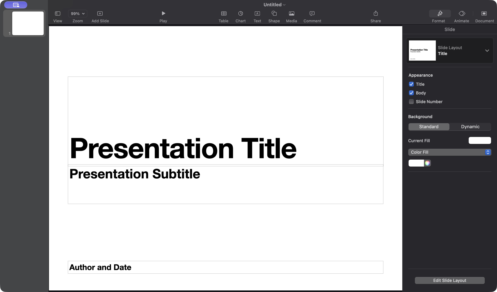
Keynote 14.5 · live macOS reference · actual window size differsApple’s contextual inspector model is described in Pages sidebars; Numbers’ separately placed tables and charts are a distinct object model, not a requirement to replace Loom’s grid. Keynote’s guide connects slide selection, effects, playback and export as a continuous authoring workflow.
Writer
The page dominates; neutral chrome and single-row toolbars hold at the inspected sizes. Compact layout retains Format/Document access. Current RTL/colour/super/subscript controls exist; stale README absence claims were excluded. Chart fidelity and precision are larger practical gaps than the basic shell.
W-01 · High priority · Live + sourceTemplate preview and created document disagree
Selecting Blank Black and Create Document produced a white page with the status “Created blank black document.” The source routes Blank and BlankBlack through the same blank_document. Newsletter’s thumbnail depicts columns while its creation path emits sequential blocks. The existing UI-12 FIXED record needs review against this current evidence.
Recommendation: Create preview and document from the same descriptor; remove misleading visual promises until the document supports them.
Reproduction / acceptance check and source evidence
Create every offered template, compare actual page geometry/content with its preview, then Save/Open and independently inspect an export.
/Users/palaashatri/Code/personal/rust-loom/loom-writer/crates/loom-writer-app/ui/template_chooser.slint:119/Users/palaashatri/Code/personal/rust-loom/loom-writer/crates/loom-writer-app/ui/template_chooser.slint:187/Users/palaashatri/Code/personal/rust-loom/loom-writer/crates/loom-writer-app/src/main.rs:354/Users/palaashatri/Code/personal/rust-loom/loom-writer/crates/loom-writer-app/src/main.rs:3585
Typography lacks direct numeric entry
Font size is a text display between +/- buttons, stepped by one point. The Pages reference exposes a typed size field with a pt unit. Preset margins also prevent exact custom page geometry.
Recommendation: Reuse a shared validated numeric field with units, Enter/Escape and a single undo transaction; retain steppers. Avoid inventing a separate app-local control.
Reproduction / acceptance check and source evidence
Enter an exact size, reject invalid input visibly, cancel without changes, undo one committed edit, save/reopen. Define supported fractional sizes explicitly.
/Users/palaashatri/Code/personal/rust-loom/loom-writer/crates/loom-writer-app/ui/text_formatting.slint:129/Users/palaashatri/Code/personal/rust-loom/loom-writer/crates/loom-writer-app/src/main.rs:2226/Users/palaashatri/Code/personal/rust-loom/loom-writer/crates/loom-writer-app/ui/inspector.slint:386
Inspector hierarchy gives specialist controls too much prominence
Paragraph Direction precedes common style/font controls; superscript/subscript and logical alignment take permanent rows. Document comments precede Page Setup in one long scroll area. Common settings become less direct than in Pages, especially as comments accumulate.
Recommendation: Put current style, family, size and common formatting first. Group direction/baseline options into secondary disclosures; give comments a distinct review region and keep Page Setup stable.
Reproduction / acceptance check and source evidence
Test typical text formatting and page setup with many comments at 1024x720 and 1280x800, with keyboard navigation and a compact drawer.
/Users/palaashatri/Code/personal/rust-loom/loom-writer/crates/loom-writer-app/ui/text_formatting.slint:55/Users/palaashatri/Code/personal/rust-loom/loom-writer/crates/loom-writer-app/ui/inspector.slint:205/Users/palaashatri/Code/personal/rust-loom/loom-writer/crates/loom-writer-app/ui/inspector.slint:316
Page-position text is hardcoded
The Document inspector’s visible and accessible summary says Page 1 of N even though the app tracks visible pages separately.
Recommendation: Use “N pages” for a document summary, or derive current page from a clearly defined caret/viewport policy.
Reproduction / acceptance check and source evidence
Move to page 3 in a multipage document; check visible and accessible position before and after scrolling and editing.
/Users/palaashatri/Code/personal/rust-loom/loom-writer/crates/loom-writer-app/ui/inspector.slint:327/Users/palaashatri/Code/personal/rust-loom/loom-writer/crates/loom-writer-app/ui/inspector.slint:340/Users/palaashatri/Code/personal/rust-loom/loom-writer/crates/loom-writer-app/src/main.rs:1422
Charts appear as summary cards rather than plotted document content
Chart projection draws a title and a textual type/category/series summary in a fixed-height card. Insert Chart consumes clipboard chart data. The editor cannot communicate the actual plotted shape of that data while composing.
Recommendation: Render the actual chart using shared document geometry; label the clipboard-only source honestly until direct chart creation exists.
Reproduction / acceptance check and source evidence
Copy a real chart from Sheets, inspect its page rendering, undo/save/reopen, and independently inspect PDF/DOCX fidelity. This flow was not run in this audit.
/Users/palaashatri/Code/personal/rust-loom/loom-writer/crates/loom-writer-app/src/projection.rs:786/Users/palaashatri/Code/personal/rust-loom/loom-writer/crates/loom-writer-app/src/projection.rs:821/Users/palaashatri/Code/personal/rust-loom/loom-writer/crates/loom-writer-app/src/docx_actions.rs:92
Clipboard/export failures need readable feedback
Some text-copy branches report success only and leave clipboard-write failures silent. DOCX export appends consequential omitted-comment warnings after the destination path in an eliding status line; actual truncation was not reproduced.
Recommendation: Report copy errors visibly. Put export losses before paths and provide readable details rather than relying on a single eliding line.
Reproduction / acceptance check and source evidence
Inject clipboard write failure and verify visible feedback without content loss; export a relevant commented document to a long path at compact width and inspect all loss details.
/Users/palaashatri/Code/personal/rust-loom/loom-writer/crates/loom-writer-app/src/clipboard_actions.rs:44/Users/palaashatri/Code/personal/rust-loom/loom-writer/crates/loom-writer-app/src/docx_export.rs:74/Users/palaashatri/Code/personal/rust-loom/loom-writer/crates/loom-writer-app/src/docx_export.rs:108
Zoom omits current scale and a direct fit action
The toolbar label is only Zoom. Its menu exposes In/Out/Actual Size without a visible percentage or Fit Width/Fit Page. At large sizes the page remains narrow within a broad surround.
Recommendation: Expose current percentage and fit actions based on real document and viewport geometry.
Reproduction / acceptance check and source evidence
Resize with inspector open/closed, select fit modes and manual zoom, and verify caret/hit/selection alignment at each scale.
/Users/palaashatri/Code/personal/rust-loom/loom-writer/crates/loom-writer-app/ui/toolbar_menu.slint:44
Sheets
The grid dominates, the compact toolbar stays readable, and the live chart derives a real selected range, series and unit. A white grid in dark mode agrees with the supplied Numbers reference and is not itself a defect. The current full-sheet grid model can remain; use honest worksheet terminology.
S-01 · High priority · Live + sourceProperty search cannot find visible font controls
Typing font in Search returns “No matching properties”; clearing it reveals Font Style and Font size. The keyword lists omit font/bold/fill/wrap/alignment/decimals.
Recommendation: Match actual property labels and reveal the relevant section/tab.
Reproduction / acceptance check and source evidence
Search each visible property name, use the resulting control by keyboard, clear the query and retain the expected selection.
/Users/palaashatri/Code/personal/rust-loom/loom-sheets/crates/loom-sheets-app/src/main.rs:1694/Users/palaashatri/Code/personal/rust-loom/loom-sheets/crates/loom-sheets-app/ui/inspector.slint:132/Users/palaashatri/Code/personal/rust-loom/loom-sheets/crates/loom-sheets-app/ui/inspector.slint:348
Data-format labels and actions disagree
The 123 choice is named Number but dispatches General. The 1.23 choice is named Decimal places but dispatches Number; decimals already have a separate stepper.
Recommendation: Align visible labels, accessible names, selected state and the actual command with General/Number/Currency/Percent.
Reproduction / acceptance check and source evidence
Choose each format on numeric cells; verify rendered output, accessibility name/state and saved format.
/Users/palaashatri/Code/personal/rust-loom/loom-sheets/crates/loom-sheets-app/ui/inspector.slint:310/Users/palaashatri/Code/personal/rust-loom/loom-sheets/crates/loom-sheets-app/src/actions.rs:908
Inspector repeats metadata and delays editable controls
Selection/Value/Formula wells repeat the grid/name/formula bar before formatting. At 1280x800 Data Format reaches the bottom; alignment and dimensions require scrolling. At 1440x900 they remain below the fold.
Recommendation: Collapse repeated cell information and move editable properties upward. Keep the current restrained grid and toolbar.
Reproduction / acceptance check and source evidence
Perform size, number-format and alignment tasks at 1280x800 without hunting through metadata; retain accessible labels and focus.
/Users/palaashatri/Code/personal/rust-loom/loom-sheets/crates/loom-sheets-app/ui/inspector.slint:158/Users/palaashatri/Code/personal/rust-loom/loom-sheets/crates/loom-sheets-app/ui/inspector.slint:256
Exact cell geometry cannot be typed
Font size, decimals, row height and column width use non-editable values with +/- controls. Width steps by 10px and height by 4px. Numbers’ reference has typed, unit-labelled fields.
Recommendation: Use shared numeric entry with units and validation, preserving one undo step and the existing steppers.
Reproduction / acceptance check and source evidence
Enter exact width/height/size, cancel an invalid edit, undo, save/reopen and verify document geometry.
/Users/palaashatri/Code/personal/rust-loom/loom-sheets/crates/loom-sheets-app/ui/inspector_rows.slint:134/Users/palaashatri/Code/personal/rust-loom/loom-sheets/crates/loom-sheets-app/src/actions.rs:1238/Users/palaashatri/Code/personal/rust-loom/loom-sheets/crates/loom-sheets-app/src/actions.rs:1275
Insert Chart reuses the existing chart without saying so
With an existing chart, a second insertion overwrites its source while retaining its prior title/type, then reports Inserted. This is undoable; no irreversible loss is claimed.
Recommendation: Within the one-chart model, label the operation Change Chart Source and identify the changed range. Do not add multi-chart architecture just to fix this wording.
Reproduction / acceptance check and source evidence
Create chart A, select range B, invoke the action, verify truthful wording/title/source and undo restoration.
/Users/palaashatri/Code/personal/rust-loom/loom-sheets/crates/loom-sheets-app/src/actions.rs:550/Users/palaashatri/Code/personal/rust-loom/loom-sheets/crates/loom-sheets-app/ui/chart.slint:87
Table name actually renames the worksheet
The Table name field dispatches rename_sheet, changes the sheet tab and updates cross-sheet formulas. Loom’s worksheet grid is distinct from Numbers’ separate table objects.
Recommendation: Call the field Worksheet name and the section Worksheet. Keep the current model explicit.
Reproduction / acceptance check and source evidence
Rename a sheet referenced by another sheet, verify the tab/formula update and undo, and confirm all visible terminology agrees.
/Users/palaashatri/Code/personal/rust-loom/loom-sheets/crates/loom-sheets-app/ui/inspector.slint:158/Users/palaashatri/Code/personal/rust-loom/loom-sheets/crates/loom-sheets-app/src/actions.rs:819
Chooser locale looks interactive but has no operation
The English (US) footer includes a dropdown chevron without an input/callback. This repeats an Apple chooser affordance without its behavior.
Recommendation: Remove the chevron or footer until locale selection has real semantics.
Reproduction / acceptance check and source evidence
Every enabled-looking chooser control is keyboard-operable and changes a meaningful setting, or is rendered as plain information.
/Users/palaashatri/Code/personal/rust-loom/loom-sheets/crates/loom-sheets-app/ui/template_chooser.slint:213
Unchecked toggle menu items lose checkability
Toolbar menu item checkable is derived from checked; an unchecked toggle is no longer exposed as a checkable command.
Recommendation: Declare toggle/radio semantics independently of current checked state.
Reproduction / acceptance check and source evidence
Inspect native accessibility trees for Bold and appearance options in both on/off states. No spoken output claim from source.
/Users/palaashatri/Code/personal/rust-loom/loom-sheets/crates/loom-sheets-app/ui/toolbar_menu.slint:76/Users/palaashatri/Code/personal/rust-loom/loom-core/crates/loom-ui/ui/foundation/overlays.slint:251
Present
Slide corners and aspect ratio remain visible in the default renderer states. Navigator placement, neutral chrome, visible selection and compact inspector access are coherent. Placeholder layouts preserve real content in source. Meaningful typography, precise properties, honest effects and keyboard access need more work.
P-01 · High priority · Live + sourceText and fill swatches are skipped by keyboard navigation
From Selected element text, the native Tab sequence traversed size, bold, italic and alignment, then jumped directly to X/Y/Width/Height/Rotation. Every text-colour and fill swatch was skipped. Source swatches lack focus/key handling; their names are ordinal “Text colour 1” / “Fill 1”.
Recommendation: Reuse a shared focusable colour control with arrow navigation, Space/Enter activation, visible focus and actual colour names.
Reproduction / acceptance check and source evidence
Complete text/fill colour changes and undo without a pointer, with visible focus and meaningful accessible names in all themes.
/Users/palaashatri/Code/personal/rust-loom/loom-present/crates/loom-present-app/ui/inspector.slint:9/Users/palaashatri/Code/personal/rust-loom/loom-present/crates/loom-present-app/ui/inspector.slint:44
Geometry strips unit suffixes without conversion
X/Y/Width/Height labels omit units. The parser removes arbitrary alphabetic suffixes, so 2 in becomes the scene value 2 rather than two inches. Runtime was not exercised.
Recommendation: Show the supported unit; accept only defined suffixes with real conversion and reject unsupported ones visibly.
Reproduction / acceptance check and source evidence
Try supported values, 2 in, unknown suffixes, invalid/nonfinite numbers; verify expected geometry, error feedback and undo.
/Users/palaashatri/Code/personal/rust-loom/loom-present/crates/loom-present-app/src/element_style_ui.rs:58/Users/palaashatri/Code/personal/rust-loom/loom-present/crates/loom-present-app/ui/inspector.slint:350
Multi-selection style and geometry behave differently
Style applies to all selected styleable objects; typed geometry finds the first selected object only, while the inspector retains singular wording.
Recommendation: Make the selection scope explicit. Apply coherent group geometry or disable single-object geometry until one object is selected.
Reproduction / acceptance check and source evidence
Select two objects, change style and geometry, verify visible scope/mixed state and one-step undo.
/Users/palaashatri/Code/personal/rust-loom/loom-present/crates/loom-present-app/src/element_style_ui.rs:78/Users/palaashatri/Code/personal/rust-loom/loom-present/crates/loom-present-app/src/element_style_ui.rs:108/Users/palaashatri/Code/personal/rust-loom/loom-present/crates/loom-present-app/ui/inspector.slint:265
Morph is an enabled fade fallback
Animate offers Morph alongside Dissolve/Push, but all non-Push effects share an opacity animation without object correspondence. This does not supply the distinctive behavior that the label teaches users to expect.
Recommendation: Expose truthful existing effects; hide Morph until its defining behavior is implemented.
Reproduction / acceptance check and source evidence
Use two slides with a matching moved/resized object and verify the named effect visually in playback, including reduced motion.
/Users/palaashatri/Code/personal/rust-loom/loom-present/crates/loom-present-app/ui/inspector.slint:390/Users/palaashatri/Code/personal/rust-loom/loom-present/crates/loom-present-app/ui/app.slint:528/Users/palaashatri/Code/personal/rust-loom/loom-present/README.md:45
Editor zoom and slideshow fit share state
Only Fit/75%/50% are available; preview remains bound to editor zoom and preview toggle does not reset it. The native fullscreen captures in this audit were blank and cannot safely distinguish rendering from capture behavior, so the specific fit defect is not declared runtime-confirmed.
Recommendation: Separate editing zoom from presentation fit and verify playback independently of window-capture behavior. Add useful editing magnification as a bounded follow-up.
Reproduction / acceptance check and source evidence
Set 50%, Play on a real display, compare Fit playback and slide corners; return to editing without losing the chosen editor zoom.
/Users/palaashatri/Code/personal/rust-loom/loom-present/crates/loom-present-app/ui/toolbar.slint:306/Users/palaashatri/Code/personal/rust-loom/loom-present/crates/loom-present-app/ui/app.slint:535/Users/palaashatri/Code/personal/rust-loom/loom-present/crates/loom-present-app/src/main.rs:2904
Inspector consumes space while duplicating modes
Format/Animate/Document appear in both toolbar and inspector tabs. With no object selected the inspector is mostly empty. Opening it at 1280px makes the slide narrower than at 1024px with the panel closed.
Recommendation: Keep one mode selector; use a user-controlled contextual inspector and a stable workspace as the window changes size.
Reproduction / acceptance check and source evidence
Resize 1024→1280→1440 with panel state preserved; verify common editing controls remain reachable and the slide fits.
/Users/palaashatri/Code/personal/rust-loom/loom-present/crates/loom-present-app/ui/inspector.slint:189/Users/palaashatri/Code/personal/rust-loom/loom-present/crates/loom-present-app/ui/app.slint:535
High contrast changes slide artwork colours
The sample subtitle is gray in light/dark and black in high contrast. Rendering uses theme paper-muted for document text. This is a visible document change, not an export-byte result.
Recommendation: Separate document-owned colours from application appearance, while retaining accessible chrome and selection affordances.
Reproduction / acceptance check and source evidence
Switch app appearance on the same deck and compare document-only pixels and independently inspected export content.
/Users/palaashatri/Code/personal/rust-loom/loom-present/crates/loom-present-app/ui/object_part.slint:89/Users/palaashatri/Code/personal/rust-loom/loom-present/crates/loom-present-app/ui/slide_canvas.slint:252
Themes are layouts; chart insertion hides its prerequisite
Chooser options generate placeholder arrangements rather than stored visual font/palette/background identities; previews use text descriptions. Chart invokes clipboard import and reports the Sheets prerequisite only after it fails. Text has one style per whole element and no font-family picker.
Recommendation: Use real layout miniatures, distinguish layout from theme, and name the current command Paste Chart from Sheets. Treat richer document themes/typography as a separate capability scope.
Reproduction / acceptance check and source evidence
Create each layout and compare preview/content; invoke chart with/without valid clipboard data; preserve an existing deck when changing document settings.
/Users/palaashatri/Code/personal/rust-loom/loom-present/crates/loom-present-app/ui/theme_chooser.slint:80/Users/palaashatri/Code/personal/rust-loom/loom-present/crates/loom-present-app/src/slide_layouts.rs:162/Users/palaashatri/Code/personal/rust-loom/loom-present/crates/loom-present-app/src/table_actions.rs:77/Users/palaashatri/Code/personal/rust-loom/loom-present/crates/loom-present-core/src/element_style.rs:27
Palette advertises the wrong Add Slide shortcut
The palette says Ctrl+Shift+A; the handler and menu use Ctrl+Shift+N.
Recommendation: Derive shortcut labels from the shared command registration.
Reproduction / acceptance check and source evidence
Compare menu/palette labels and invoke the advertised shortcut with native keyboard input.
/Users/palaashatri/Code/personal/rust-loom/loom-present/crates/loom-present-app/src/palette.rs:81/Users/palaashatri/Code/personal/rust-loom/loom-present/crates/loom-present-app/ui/app.slint:368
Owner follow-up: padding, menus and application icons
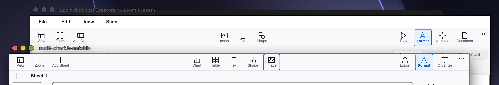
Owner-supplied native crop. Native traffic lights are present; the client toolbar state outlines are cramped.S-09 · High priority · Owner screenshot + sourceToolbar focus/selection outlines have no vertical breathing room
Sheets caps the toolbar at 48 logical px plus text scaling; shared labelled items have a 48 px minimum and 52 px maximum, while the toolbar supplies no vertical padding. Focus/selected outlines therefore fill the row height and meet the separators. Image’s 2px focus border and Format’s 1px selected border are different states of the same control. The separate 32px More button is an alignment boundary to measure; its precise offset is not proven by the crop.
Recommendation: Define shared row/item geometry with a consistent vertical inset, icon/label baselines and unclipped accessible focus. Explicitly center compact overflow beside labelled items. Do not shrink targets or remove focus outlines.
Reproduction / acceptance check and source evidence
At native 1×/2× and text scale1.0, measure control rectangles/insets and baselines; focus Image and More, toggle Format, resize and verify visible-center clicks and focus return. Distinguish this confirmed padding issue from an unmeasured backing-scale hypothesis.
/Users/palaashatri/Code/personal/rust-loom/loom-sheets/crates/loom-sheets-app/ui/toolbar.slint:21/Users/palaashatri/Code/personal/rust-loom/loom-sheets/crates/loom-sheets-app/ui/toolbar.slint:58/Users/palaashatri/Code/personal/rust-loom/loom-core/crates/loom-ui/ui/toolbar_item.slint:24/Users/palaashatri/Code/personal/rust-loom/loom-core/crates/loom-ui/ui/toolkit.slint:69/Users/palaashatri/Code/personal/rust-loom/loom-core/crates/loom-ui/ui/foundation/toolbar_items.slint:20
Application identity is incomplete across distribution surfaces
At audit start there were no canonical app-brand PNG/ICO/ICNS assets or main-window icon bindings. Linux packaging generated generic letter tiles; macOS packaging omitted CFBundleIconFile and icon resources, and Windows shortcuts/executables had no explicit app icon. Three original icons and platform encodings are now created. Source integration is a separate verified result; portable Windows PE embedding and native OS cache/display checks remain relevant gaps.
Recommendation: Use one canonical asset family and provenance registry; wire Slint windows/presenter, native macOS bundle resources, existing Linux icon installation and Windows installer shortcuts. Track raw Windows executable embedding until validated on Windows.
Reproduction / acceptance check and source evidence
Validate PNG alpha/dimensions, ICO size entries, ICNS round trip, actual packaging declarations/files and native Dock/Finder/taskbar/launcher identity after a fresh install/relaunch, at small and Retina sizes.
/Users/palaashatri/Code/personal/rust-loom/loom-bootstrap/packaging/release.py:138/Users/palaashatri/Code/personal/rust-loom/loom-bootstrap/packaging/release.py:320/Users/palaashatri/Code/personal/rust-loom/loom-bootstrap/packaging/release.py:450/Users/palaashatri/Code/personal/rust-loom/loom-bootstrap/scripts/audit-assets.py:12
Original Loom icon family
Generated with the built-in image tool from original prompts, without Apple reference artwork as image input. PNG masters are 1024×1024 with alpha; ICOs include 16/24/32/48/64/128/256px entries; native ICNS files include standard and Retina representations. These are original artwork deliverables, not evidence that every native distribution surface has been validated.
Highest-value repair sequence
- Prove native macOS framing and repair surviving global menus; keep the owner’s Liquid Glass requirement as an explicit host design task.
- Repair misleading or inaccessible controls: Writer templates, Sheets search/format labels, Present swatches/unit parsing/Morph.
- Improve common authoring efficiency with shared typed numeric entry, stable contextual inspectors, honest zoom/fit and chart-source naming.
- Close document-fidelity gaps with real chart rendering, appearance-independent document colours, readable import/export losses and verified persistence/undo.
Each repair needs a bounded behavioral check followed by normal native interaction. Do not recertify applications from these screenshots, launch success, source tests or percentage scores.
Live defect evidence
Present native Tab sequence records the jump from alignment to X/Y geometry, skipping all colour/fill swatches. Native AX evidence: Writer, Sheets, Present.
Full default-state render matrix
Each entry opens the original capture. No visual baseline was refreshed.
Writer — 12 inspected captures
Sheets — 12 inspected captures
Present — 12 inspected captures
Owner-provided reference screenshots — 27 August 2026
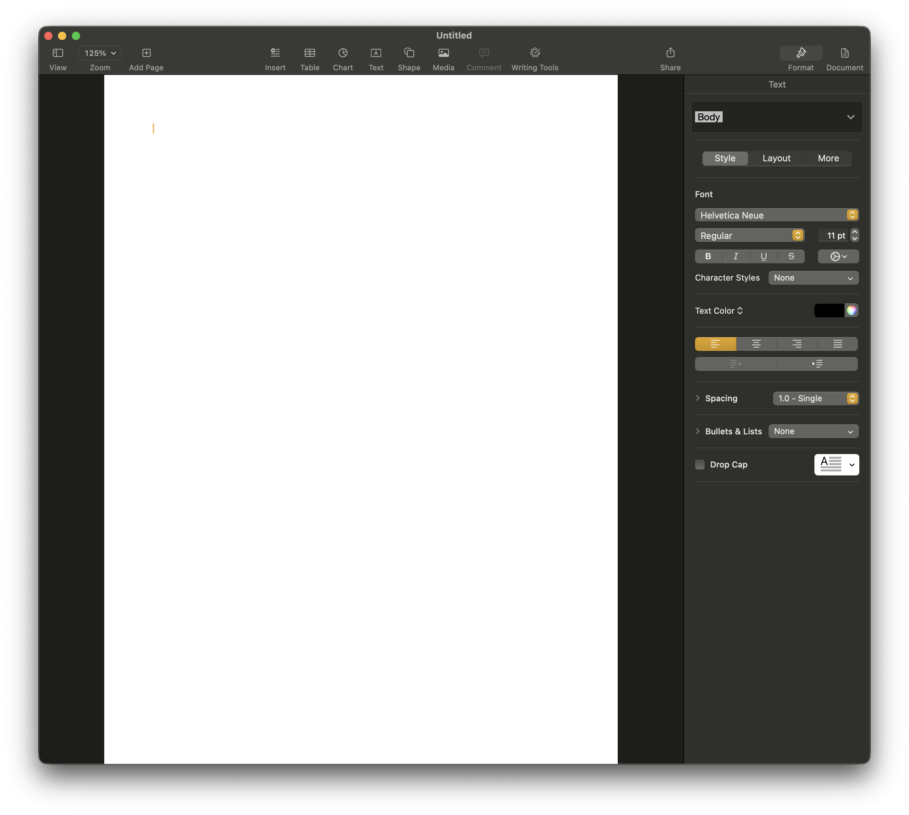
Reference 1: Screenshot 2026-08-27 at 3.51.33 PM.png
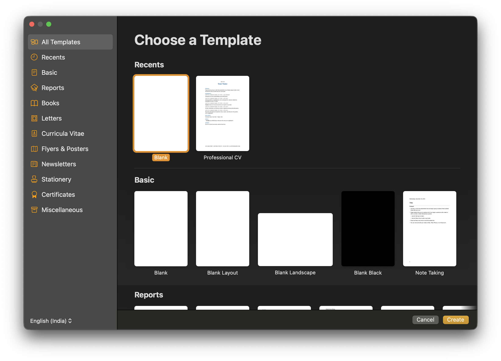
Reference 2: Screenshot 2026-08-27 at 3.51.20 PM.png
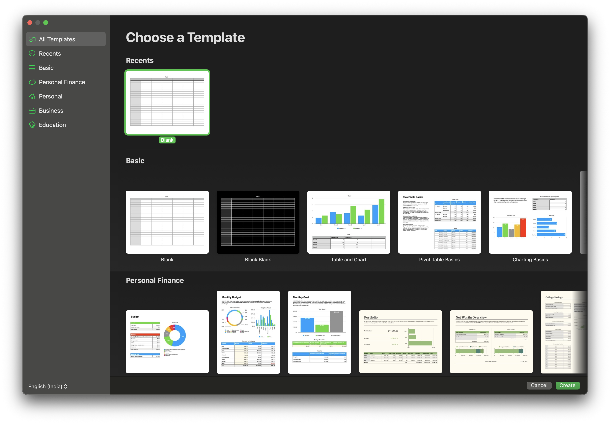
Reference 3: Screenshot 2026-08-27 at 4.31.46 PM.png
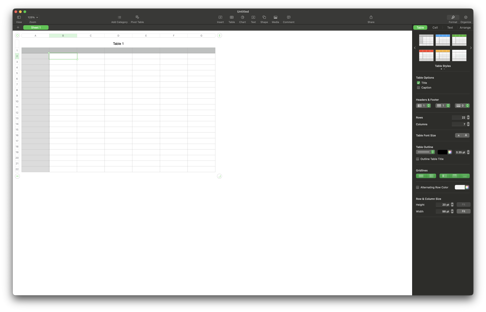
Reference 4: Screenshot 2026-08-27 at 4.31.56 PM.png
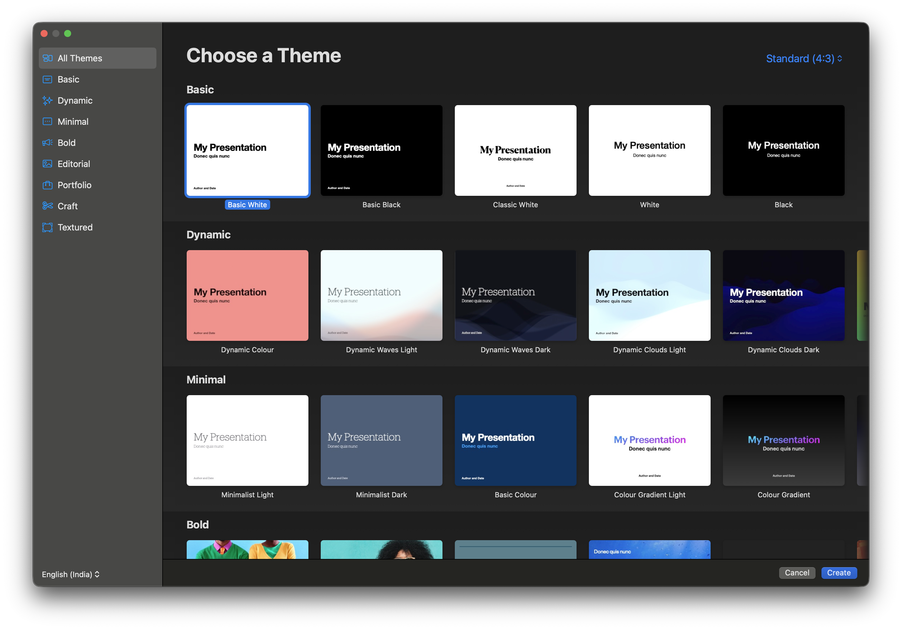
Reference 5: Screenshot 2026-08-27 at 4.33.02 PM.png
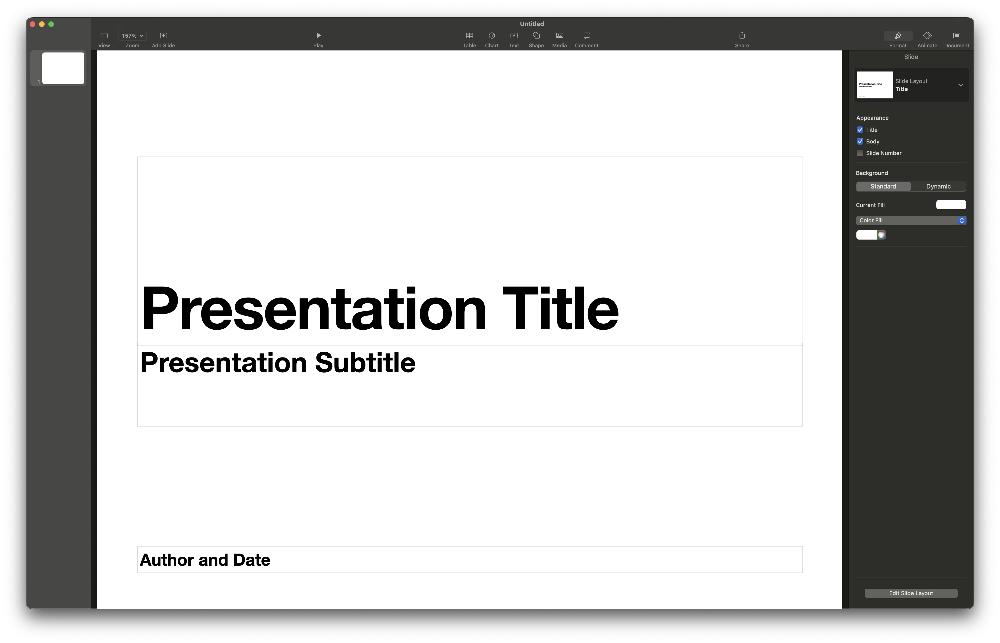
Reference 6: Screenshot 2026-08-27 at 4.33.18 PM.png
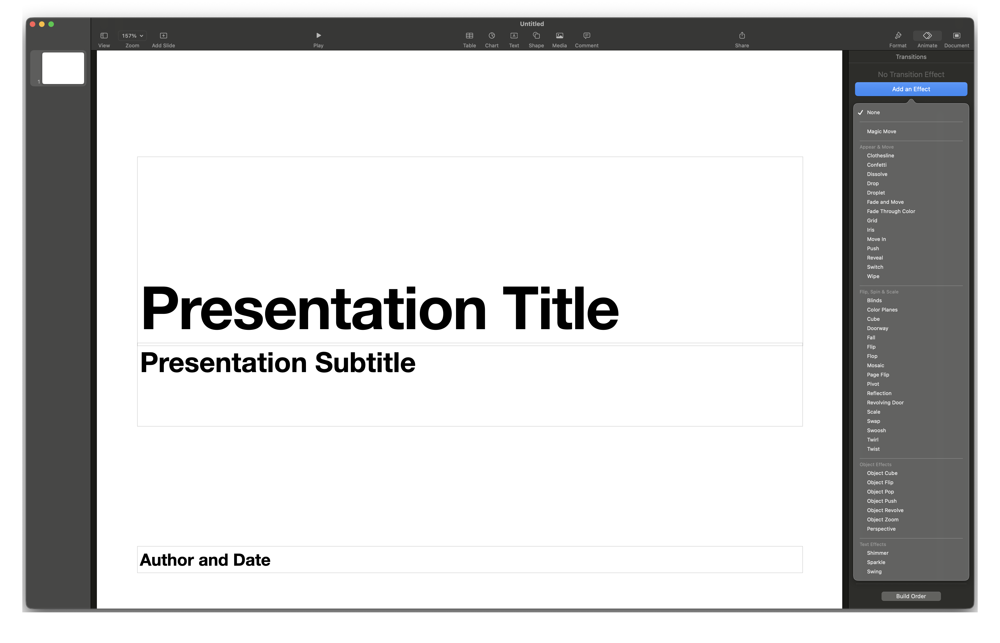
Reference 7: Screenshot 2026-08-27 at 4.33.28 PM.png
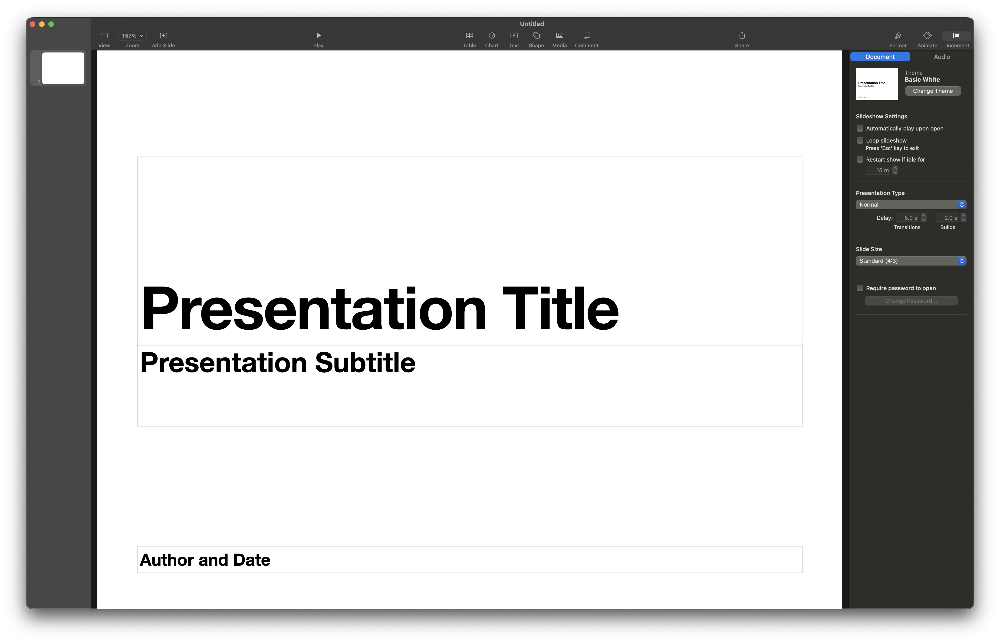
Reference 8: Screenshot 2026-08-27 at 4.33.36 PM.png
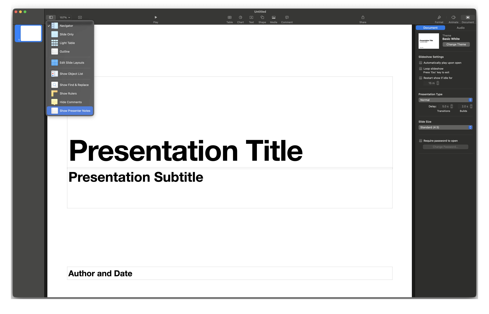
Reference 9: Screenshot 2026-08-27 at 4.33.50 PM.png
Icon implementation and final verification
Artwork and source integration are implemented; application acceptance remains blocked. The four Slint windows embed their canonical PNGs, confirmed in generated Rust include_bytes declarations. The native packager uses indexed 512px Linux hicolor assets, root PNGs for AppImage, bundle ICNS/CFBundleIconFile for macOS and ICO-backed Windows MSI shortcuts. ICO/ICNS provenance is enforced. The 20 focused packaging tests pass; their native tools are mocked, so this is source/staging validation rather than an installed-product claim.
| App | Debug build | Strict Clippy | App test run |
|---|
| Writer | PASS | FAIL:13 Writer-core lint errors | Incomplete: 900-second command timeout; 9 failures reported before timeout. |
|---|
| Sheets | PASS | PASS | Incomplete: 900-second command timeout during RTL render matrix; no test failure was reported before timeout. |
|---|
| Present | PASS | PASS | FAILED: 290 passed, 1 failed, 0 ignored; complete run. |
|---|
The Present failure is the shortcut-label assertion in slide_order_tests::move_commands_are_enabled_only_where_the_slide_can_move: the macOS menu reports Cmd+Opt+Up/Down, while the test expects Ctrl+Alt+Up/Down. It fails at line 117, before the later enablement assertions execute. The test was left unchanged; no green result is claimed.
Writer failures were reported in caret Home/End, RTL justification and picture interaction cases. The full run timed out before its final assertion summaries. These failures were observed in the current working tree and were not individually isolated against a pre-icon build. The retained Writer/Sheets test children were terminated after their command timeouts and verified absent.
Ruff, asset, code-structure, governance and UI-foundation audits pass; the structure check enforces 13 legacy ceilings. No baseline was refreshed. The 32 comparative findings remain in the live ledger; ICON-01 is NEEDS_REVIEW for native/distribution checks and remaining portable-executable identity.
A native shortcut-delivery observation also needs a physical-keyboard check: CUA Ctrl+N and Cmd+Z/Cmd+N probes inserted letters in Writer’s body, while menu clicks performed New/Save. The probe text was removed and the restored content preserved. This is not recorded as a confirmed physical-keyboard defect.
Exact command/results and failed Writer cases
- Writer build: exit 0 · log ·
cargo build -p loom-writer-app --locked --offline - Writer clippy: exit 101 · log ·
cargo clippy -p loom-writer-app --all-targets --locked --offline -- -D warnings - Writer tests: 900-second timeout · log ·
cargo test -p loom-writer-app --locked --offline -- --test-threads=1 - Sheets build: exit 0 · log ·
cargo build -p loom-sheets-app --locked --offline - Sheets clippy: exit 0 · log ·
cargo clippy -p loom-sheets-app --all-targets --locked --offline -- -D warnings - Sheets tests: 900-second timeout · log ·
cargo test -p loom-sheets-app --locked --offline -- --test-threads=1 - Present build: exit 0 · log ·
cargo build -p loom-present-app --locked --offline - Present clippy: exit 0 · log ·
cargo clippy -p loom-present-app --all-targets --locked --offline -- -D warnings - Present tests: exit 101 · log ·
cargo test -p loom-present-app --locked --offline -- --test-threads=1
caret_keys_tests::ctrl_end_then_ctrl_home_returns_the_caret_and_the_page_to_the_topcaret_keys_tests::ctrl_home_leaves_a_long_table_at_the_end_and_returns_to_the_topcaret_keys_tests::ctrl_home_returns_to_the_top_when_the_page_is_zoomedparagraph_alignment::paragraph_alignment_tests::imported_rtl_justify_is_preserved_and_available_with_shaped_geometryparagraph_alignment::paragraph_alignment_tests::rtl_only_selection_is_justified_with_shaped_geometrypicture_drag_tests::a_right_aligned_picture_previews_where_the_committed_layout_puts_itpicture_drag_tests::dragging_the_bottom_right_handle_resizes_live_and_keeps_the_aspect_ratiopicture_drag_tests::escape_during_a_handle_drag_restores_the_size_and_a_later_release_adds_nothingpicture_tests::inserting_a_picture_adds_one_block_the_page_draws_and_undo_removes_it
Focused packaging/audit commands · Per-app verification summary · Post-build binary hashes, embedded-PNG evidence and capture hashes · 20-test output
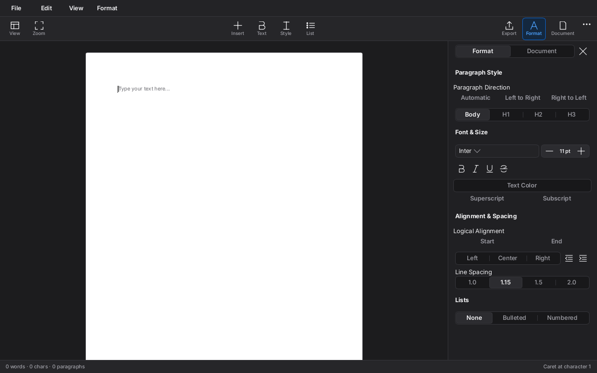
Fresh post-icon Writer · 1280×800 dark content render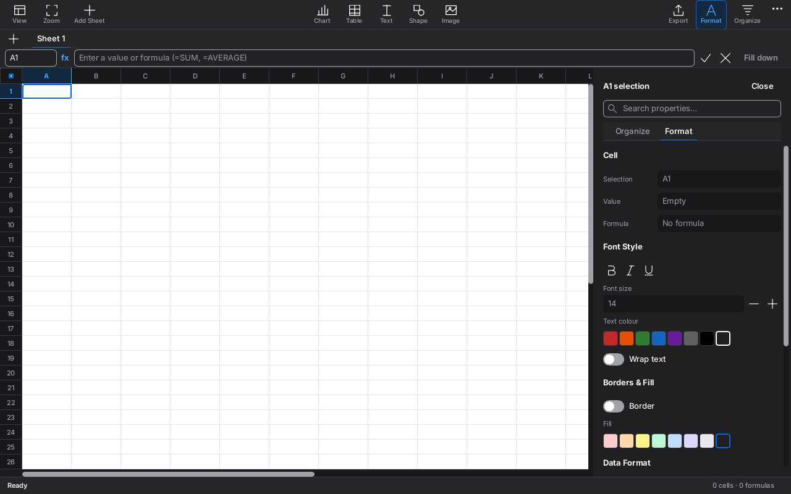
Fresh post-icon Sheets · 1280×800 dark content render Fresh post-icon Present · 1280×800 dark content render
Fresh post-icon Present · 1280×800 dark content renderRepository provenance: the audit began at e54bea7; HEAD later changed to e3c8865bd678181a0f98f9937f248d8d681f2553 while work was in progress. This audit did not run git commit. Retained binary hashes identify the actual builds behind the evidence. Earlier captures remain dated build evidence rather than a claim that the whole working tree was frozen.
Provenance and practical limits
Writer was changing in another context during this audit. The initial capture set and live Writer used its first build; a later rebuild and six recheck captures are recorded separately. Do not assume a finding in an older binary still exists after concurrent edits. The clipped Text Color edge in the initial build is absent in all six rebuilt recheck captures and is excluded from the outstanding list. The recheck established complete borders in both sizes and all three themes.
Initial audit limits, before the later follow-up: Windows/Linux native GUI and installer execution, physical macOS keyboard delivery, spoken screen-reader output, complete populated-state/theme/DPI/text-scale/RTL matrices, performance, failure injection, all save/open/export round trips, or independent office-format interoperability. The blank native Present playback captures are retained as inconclusive evidence, not diagnosed as a confirmed zoom or renderer failure. The later owner frame-inclusive crop confirms native controls exist; full frame/content/backing bounds and interaction still require verification.
The initial review made no menu, padding, material or document-behavior fixes, toolkit changes, baseline updates, release claims or acceptance promotions. The subsequent colour and bounded Sheets changes are recorded below. The subsequent owner-authorized icon asset/integration work is recorded separately.
Owner follow-up: app colours and Sheets performance
Writer now uses violet, Sheets jade and Present coral accents. The shared theme applies these to commands, focus, selection and active controls in light/dark. High contrast retains its universal accessibility palette. Document-role colours stay independent of app identity; existing document-theme fidelity findings remain open.
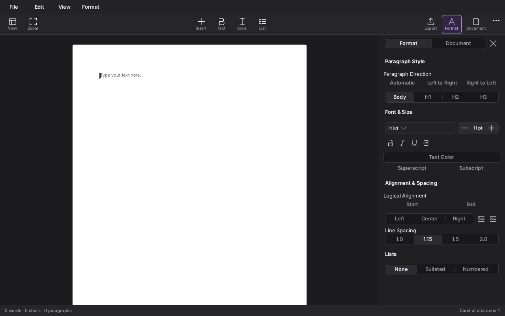
Writer · fresh 1280×800 dark content render. Open for native capture.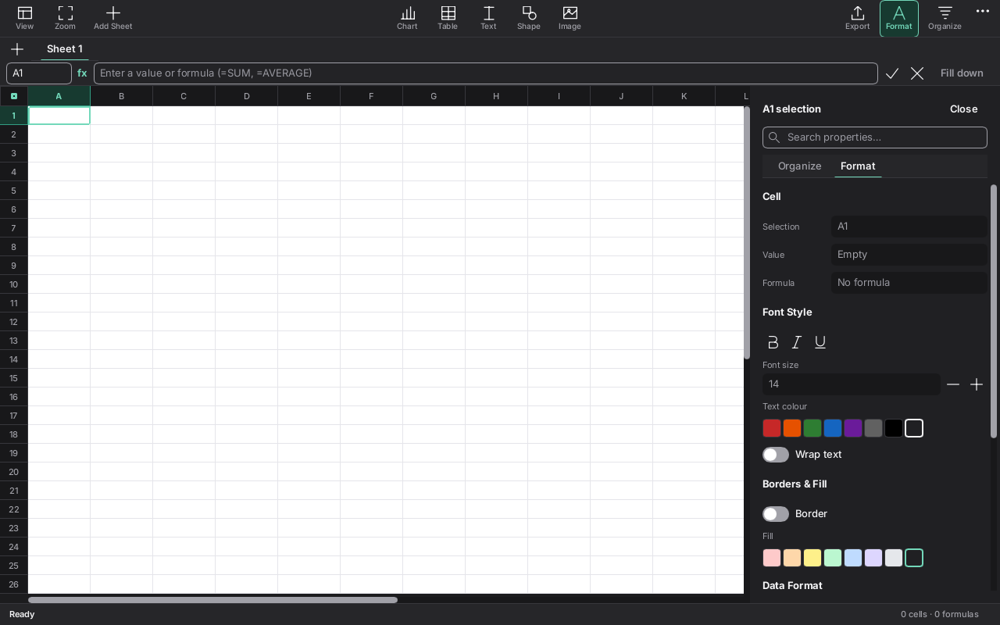
Sheets · fresh 1280×800 dark content render. Open for native capture.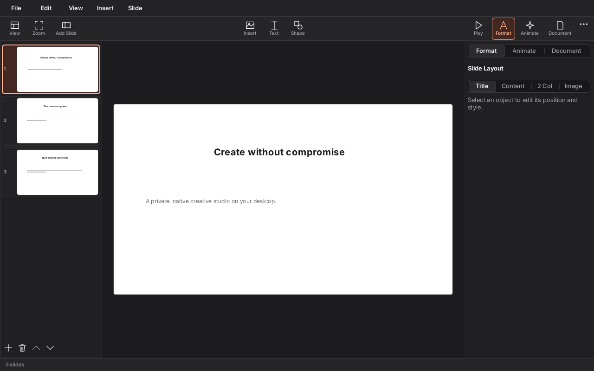
Present · fresh 1280×800 dark content render. Open for native capture.The 36 new captures cover four sizes and three themes. Nine representative frames plus native light-theme views of all three apps were visually inspected; the manifest validates every output and hash. This is scoped colour verification, not full application acceptance.
All 36 app-colour captures
Writer
1024x720 · light1024x720 · dark 1024x720 · high-contrast1280x800 · light1280x800 · dark1280x800 · high-contrast1440x900 · light1440x900 · dark1440x900 · high-contrast1920x1200 · light1920x1200 · dark1920x1200 · high-contrast
1024x720 · high-contrast1280x800 · light1280x800 · dark1280x800 · high-contrast1440x900 · light1440x900 · dark1440x900 · high-contrast1920x1200 · light1920x1200 · dark1920x1200 · high-contrast Sheets
1024x720 · light1024x720 · dark1024x720 · high-contrast1280x800 · light1280x800 · dark 1280x800 · high-contrast1440x900 · light1440x900 · dark
1280x800 · high-contrast1440x900 · light1440x900 · dark 1440x900 · high-contrast1920x1200 · light1920x1200 · dark1920x1200 · high-contrast
1440x900 · high-contrast1920x1200 · light1920x1200 · dark1920x1200 · high-contrast Present
1024x720 · light1024x720 · dark1024x720 · high-contrast1280x800 · light1280x800 · dark 1280x800 · high-contrast1440x900 · light1440x900 · dark
1280x800 · high-contrast1440x900 · light1440x900 · dark 1440x900 · high-contrast1920x1200 · light1920x1200 · dark1920x1200 · high-contrast
1440x900 · high-contrast1920x1200 · light1920x1200 · dark1920x1200 · high-contrast Fresh capture provenance
Sheets: the earlier fixes were retained
Git ancestry and current source retain Claude’s scroll fast path, in-place model updates, copy-on-write cells and sparse accessibility. The prior icon change altered no performance path. The audit launcher had used an unoptimized debug binary.
| 300,000-cell benchmark | Unoptimized test p95 | Same-source opt-level 2 p95 | Final code, enforced p95 |
|---|
| Scroll callback | 7.37 ms | 1.50 ms | 1.25 ms |
| Software frame | 195.99 ms | 11.57 ms | 9.96 ms |
Sheets now has an optimized development profile with debug information. Arrow/Shift-arrow helpers reuse accepted workbook values, matching mouse selection; two regression cases failed before this repair and passed afterward. The native two-sheet fixture verified plain-arrow values 10/25, scrolling, typing 99 and native-menu Undo restoring two formula cells. A CUA Shift+Down probe produced a plain move, so physical modifier delivery remains unverified; range entry A1:A2 and its SUM 35 were verified separately. Native OpenGL input/frame latency is not measured by the software benchmark.
Focused instructions
AGENTS.md was reduced from 410,395 to 3,261 bytes. The entrypoint routes engineering, workflow, design and platform rules, one current gate/status table, bounded scopes, findings and dated history. The documentation manifest and governance checks enforce the new owners. The 36 governance tests pass, including missing imports, broken anchors, duplicate ledgers and lock drift.
Known wider Writer/Present test failures and previous incomplete runs are retained above. No app acceptance or baseline was promoted. Exact source, command, test and native evidence is recorded in the focused docs audit and .work/app-colors-20261027/ plus .work/sheets-perf-20261027/.